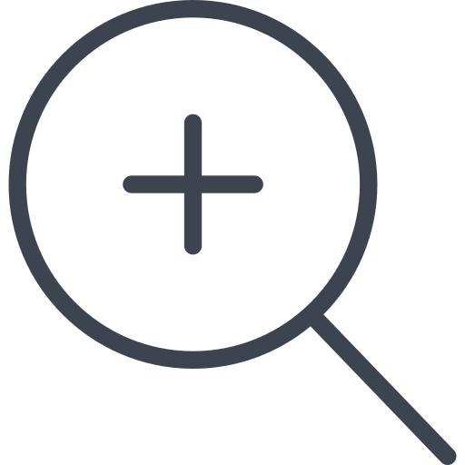

<ion-header>
  <ion-navbar>
    <ion-row *ngIf="!searching">
      <ion-col col-1 (click)="goBack()">
        
      </ion-col>
    <ion-col col-6 class="tab-title" >
      <b>{{title}}</b>
    </ion-col>
    <ion-col col-2 class="search" (click)="incrementZoom(0.1)">
      
    </ion-col>
    <ion-col col-1 class="search">
      
    </ion-col>
    <ion-col col-2 class="notification" (click)="incrementZoom(-0.1)" >
      
    </ion-col>
    </ion-row>
    <ion-row *ngIf="searching">
      <ion-col col-3 (click)="openSearch()">
          <i class="fa fa-close"></i>
      </ion-col>
      <ion-col col-9>
        <input type="text" placeholder="search">
      </ion-col>
    </ion-row>
  </ion-navbar>
</ion-header>
<ion-content padding>
  <pdf-viewer [src]="pdfSrc" 
              [render-text]="true"
              [fit-to-page]="true"
              [original-size]="false"
              [zoom]="zoom" 
              [autoresize]="autoresize"
              style="display: block; width: 100%;"
  ></pdf-viewer>
</ion-content>